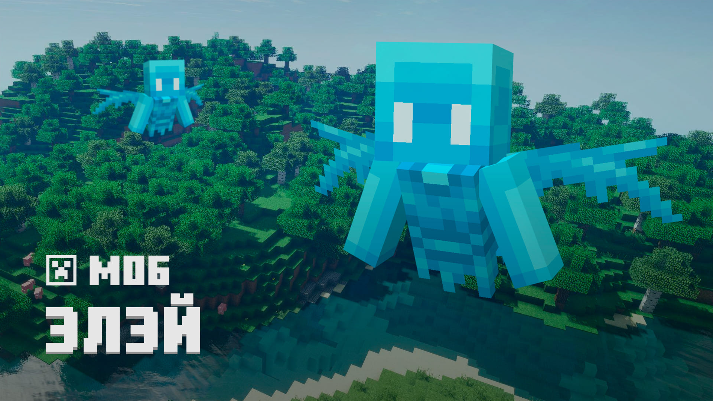

Там карочь в обнові лодки з сундуками Елей там. Жаби, блоки нові.
Кстаті про них написали шо вони будуть як вірус но вони не будуть розпространятися на блоки які поставить ігрок.
Шаз розкажу по пунктам
- Лодки з сундуками
- Жаби
- Мангове дерево
- Обновлять болото як біом
- Вардени і подземельки
Спойлер мангове дерево це те саме джунглєве но з новою назвою